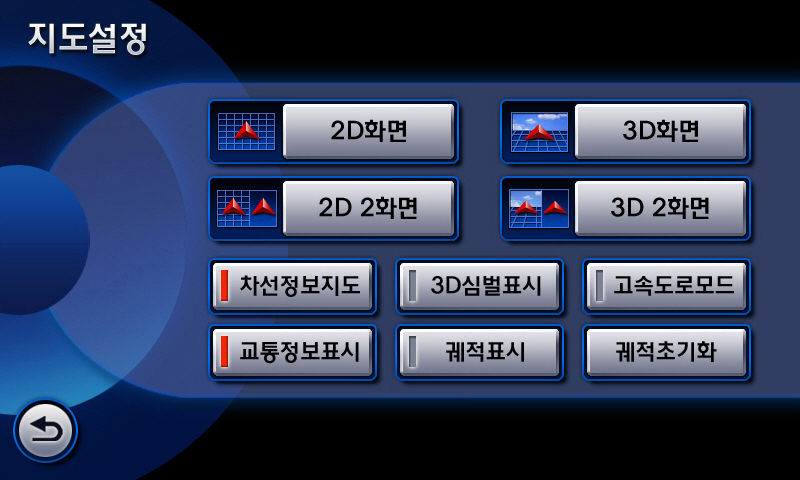

KIA OPRIUS DVD Navigation System (Hyundai Mobis – 2007) 현대 모비스 재직시 작업한 기아자동차 오피러스 向 DVD Navigations System GUI
Design기아자동차의 내장 컬러인 레드에서 벗어나 기존 오피러스가 가지고 있던 내장컬러에 맞추어 블루톤으로 제작하였고, 2009년형 신규 디자인을 적용하여 세련된 느낌을 표현하고 있다. 기존 세대의 OPRIUS 에 적용된 QVGA 급 해상도에서 WVGA 급의 해상도로 업그레이드 되면서 이전 세대보다 미려한 디자인과 컬러를 적용 할 수 있게되어 상품성에서도 많은 발전을 이룬 첫번째 모델이다.

KIA Opirus AV/Navi System
KIA MOHAVE AV System (Hyundai Mobis – 2007) 현대 모비스 재직시 작업한 기아자동차 모하비 向 AV System GUI Design.
기아자동차의 내장 컬러인 레드를 컬러 컨셉으로 2009년형 신규 디자인을 적용하여 세련된 느낌을 표현하였다. 좌측의 내비게이션 버튼은 운전자 중심의 조작성과 편의성을 고려하여 Function Key 들을 위치시켰고, 우측의 세부 기능과 차별화 된 영역으로 표현하여 심미성까지 고려한 디자인을 구현하였다.
KIA Mohave AV/Navi System
SsangYong C200 AV System (Hyundai Mobis – 2008) 현대 모비스 재직시 작업한 쌍용자동차 C200(KorandoC) 向 AV System GUI Design
2008년에 컨셉디자인 작업 중 퇴사하면서 후임자에게 인수인계하기전 까지 작업된 화면, 현재 구현된 디자인을 보면 전체적인 틀은 거의 그대로 유지되고 있음을 볼 수 있다. 쌍용측의 강력한 요청으로 전반적인 레이아웃은 가로로 늘어선 일자형 레이아웃을 하고있으며, 심플한 2D Type Icon과 Seamless 한 영역 구분을 통해 전반적으로 정보전달에 최적화 된 디자인을 컨셉으로 제작 되었다.
SSANGYONG Korando C AV/Navi System
Mercedes Benz Korea向 DVD Navigation System (Hyundai Mobis – 2008) 벤츠 코리아 C-Class 向 DVD Navigations System GUI Design으로 기존 벤츠의 AV System Look&Feel 의 컬러와 Scheme 을 반영하여 현지화 디자인 작업을 진행한 프로젝트로 기본적인 레이아웃은 터치를 기반으로 구성되어 있으나 조작 타입은 리모컨으로 다소 부자연스럽게 연결된 작업이다. 향후 터치패널 추가라는 개선사항을 염두에 두고 작업되었으나 아쉽게 이 버전에서 실행되지 못하였고, 벤츠 코리아의 향후 현지화 내비게이션은 터치패널 추가와 지니맵 탑재로 이어졌다.
BENZ Korea Navi System
Car AV System Booting Screen (Hyundai Mobis – 2006~2007) 현대자동차, Mercedes-Benz, SAAB, Honda Motors의 AV System Booting Screen Design 작업